Image Audit
Who held global power in 1450?
 File:
File: /images/global_canton.jpg
Caption: An early 19th-century painting by an unknown Chinese artist showing the Thirteen Factories in Canton (Guangzhou). This was the only area where foreign merchants (including the British East India Company) were permitted to trade with Qing dynasty China.
Alt: View of the Thirteen Factories in Canton (c. 1800)
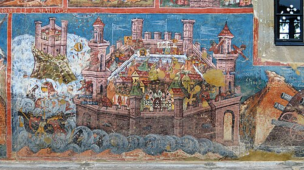
File: /images/ottoman_1453.jpg
Caption: A 1537 fresco from the Moldovița Monastery in Romania depicting the 1453 Siege of Constantinople. The fall of the city to the Ottoman Turks severely disrupted European access to the Silk Road, forcing Christian nations to seek alternative maritime routes to Asia.
Alt: Fresco of the Siege of Constantinople (1537)
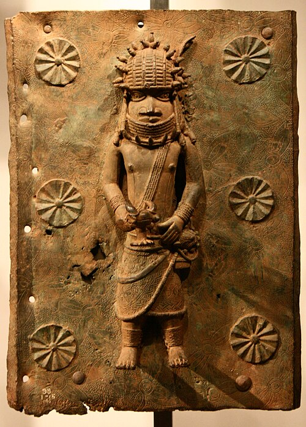
File: /images/benin_bronze.jpg
Caption: A 16th-century brass plaque from the Kingdom of Benin (modern-day Nigeria). Crafted by the Edo people, such plaques decorated the royal palace of the Oba. They demonstrate the highly advanced metallurgical skills and complex societal structure of West African kingdoms prior to European colonization.
Alt: 16th-Century Benin Bronze Plaque
 File:
File: undefined
Caption: None
Alt: None
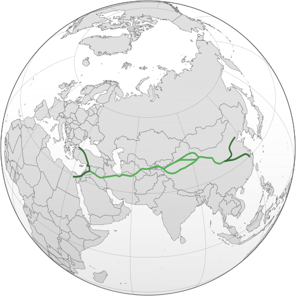
File: /images/silk_road.jpg
Caption: A modern historical map illustrating the vast network of Eurasian trade routes known as the Silk Road. Before 1450, these overland routes were the primary arteries for luxury goods, spices, and technologies flowing from Asia into the Mediterranean.
Alt: Map of the Silk Road Trade Routes
How did religious conflict trigger global exploration (1517–1588)?
File: undefined
Caption: None
Alt: None
File: undefined
Caption: None
Alt: None
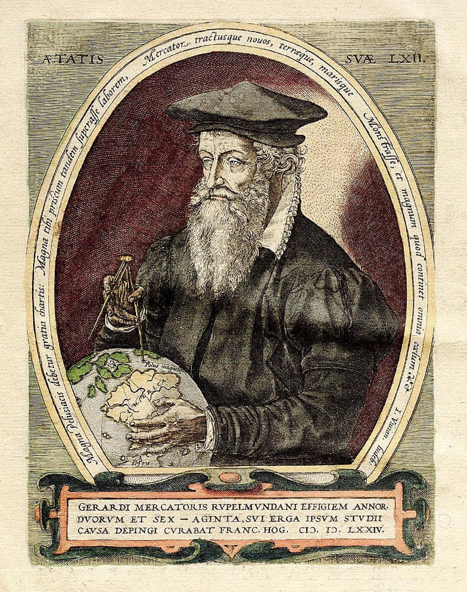
File: /images/global_mercator.jpg
Caption: Portrait of Gerardus Mercator (1574) by Frans Hogenberg. In 1569, Mercator invented a revolutionary cylindrical map projection that allowed sailors to chart courses as straight lines, greatly facilitating the explosive growth of global European navigation and exploration.
Alt: Portrait of Gerardus Mercator (1574)
 File:
File: /images/martin_luther_portrait.jpg
Caption: Portrait of Martin Luther by Lucas Cranach the Elder (1529). Luther was a German monk whose 1517 Ninety-five Theses sparked the Protestant Reformation, permanently shattering the religious unity of Western Europe and triggering decades of conflict.
Alt: Portrait of Martin Luther (1529)
 File:
File: /images/tordesillas_map.png
Caption: A historical map depicting the Line of Demarcation established by the Treaty of Tordesillas in 1494. Blessed by the Pope, it audaciously divided the newly discovered non-Christian world exclusively between the rival Catholic powers of Spain and Portugal.
Alt: Map of the Treaty of Tordesillas (1494)
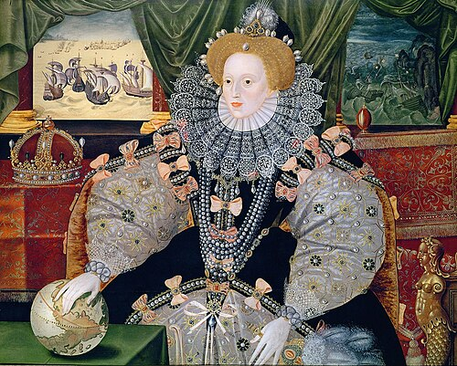
File: /images/armada_portrait.jpg
Caption: The Armada Portrait of Queen Elizabeth I (c. 1588), attributed to George Gower. The Queen rests her hand on a globe, symbolizing England's rising imperial ambitions, while the background depicts the miraculous defeat of the Spanish Armada.
Alt: The Armada Portrait of Queen Elizabeth I (c. 1588)
Trade or takeover: How did early encounters turn into empire?
 File:
File: /images/early_mod_l3_banner.jpg
Caption: None
Alt: None
File: undefined
Caption: None
Alt: None
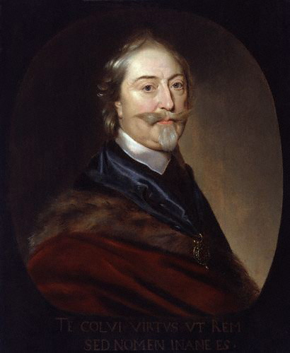
File: /images/sir_thomas_roe.jpg
Caption: A depiction of Sir Thomas Roe, an English diplomat, presenting his credentials to the powerful Mughal Emperor Jahangir in 1615. Roe successfully negotiated exclusive trading rights for the East India Company, laying the foundation for British dominance in India.
Alt: Sir Thomas Roe at the Mughal Court (1615)
 File:
File: /images/jamestown_fort.jpg
Caption: A historical plan of the triangular James Fort built in 1607. It was the first permanent English settlement in the Americas, heavily fortified to defend against both the indigenous Powhatan Confederacy and potential attacks from rival Spanish ships.
Alt: Plan of James Fort in Virginia (1607)
Who controlled Britain: The King, Parliament, or Imperial Profits?
File: undefined
Caption: None
Alt: None
File: undefined
Caption: None
Alt: None
 File:
File: /images/royal_exchange_courtyard.jpg
Caption: An engraving of the Royal Exchange in London by Wenceslaus Hollar (1644). Established as a center for commerce, it became the beating heart of England's financial revolution, where merchants traded stocks, commodities, and funded global colonial ventures.
Alt: The Royal Exchange, London (1644)
 File:
File: /images/oliver_cromwell.jpg
Caption: Portrait of Oliver Cromwell by Samuel Cooper (1656). Following the English Civil War, Cromwell ruled as Lord Protector of the Commonwealth, enforcing strict Puritan values and aggressively expanding English naval power.
Alt: Portrait of Oliver Cromwell (1656)
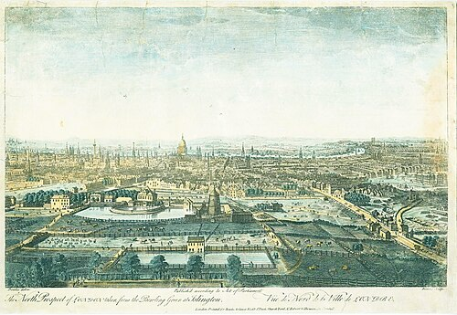
File: /images/global_thames.jpg
Caption: An 18th-century painting by Samuel Scott depicting the bustling East India Company docks in London. The immense volume of imported global goods transformed London into the wealthiest maritime trading hub in the world.
Alt: East India Company Docks (c. 1730)
What were the mechanics of the Transatlantic Slave Trade?
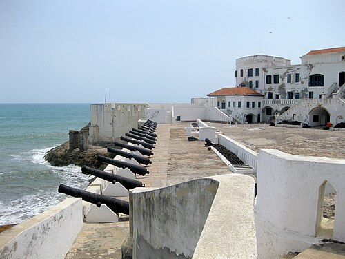
File: /images/cape_coast_castle.jpg
Caption: Cape Coast Castle, a 'slave castle' on the Gold Coast (modern-day Ghana). Captured Africans were held in brutal dungeons below, while European governors lived in luxury above.
Alt: Cape Coast Castle, a European slave fort on the Gold Coast
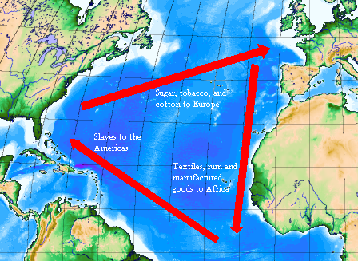
File: /images/triangular_trade.png
Caption: A map illustrating the Triangular Trade system. British manufactured goods were traded for enslaved Africans, who were transported under horrific conditions to the Americas to produce cash crops like sugar and tobacco, which were then shipped back to Europe.
Alt: Diagram of the Triangular Trade
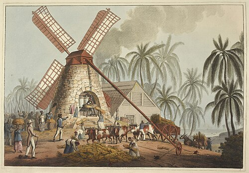
File: /images/plantation.jpg
Caption: An 18th-century illustration of a Caribbean sugar plantation. Notice the systematic layout designed to maximize surveillance, control, and grueling labor.
Alt: A Cuban sugar plantation, showing the scale of the operation
How did enslaved Africans resist the Transatlantic Slave Trade?
 File:
File: /images/brookes_ship.jpg
Caption: None
Alt: None
File: undefined
Caption: None
Alt: None
 File:
File: /images/equiano.jpg
Caption: Frontispiece portrait of Olaudah Equiano from his 1789 autobiography. As a formerly enslaved man who purchased his own freedom, his vivid first-hand account of the horrors of slavery became a crucial piece of evidence in the British abolitionist movement.
Alt: Portrait of Olaudah Equiano (1789)
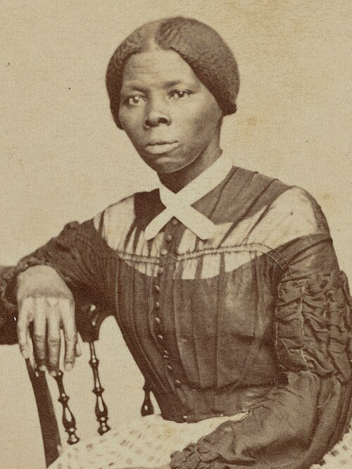
File: /images/harriet_tubman.jpg
Caption: A portrait of Harriet Tubman, an escaped enslaved woman who became a famous 'conductor' on the Underground Railroad, risking her life to lead dozens to freedom.
Alt: [Key Individual: Harriet Tubman], a key figure in the Underground Railroad
File: /images/sidequest_cassava.jpg
Caption: A botanical illustration of the cassava plant. Enslaved people frequently used their deep botanical knowledge of toxic plants to quietly poison their enslavers.
Alt: 18th-century botanical illustration of the Cassava root
 File:
File: /images/william_wilberforce.jpg
Caption: Portrait of William Wilberforce, the British Member of Parliament who famously led the parliamentary campaign to abolish the slave trade.
Alt: Portrait of [Key Individual: William [Key Individual: William [Key Individual: William Wilberforce]]], a British politician and abolitionist
How 'modern' was Britain by 1750? (Synthesis & Assessment)
File: undefined
Caption: None
Alt: None
File: undefined
Caption: None
Alt: None
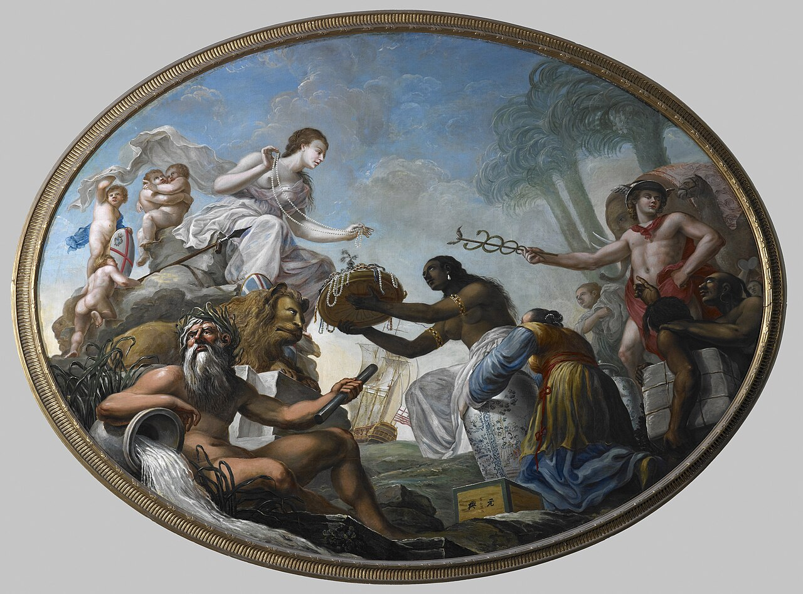
File: /images/global_britannia.jpg
Caption: A 1778 ceiling painting by Spiridione Roma titled 'The East Offering its Riches to Britannia,' commissioned for the East India Company headquarters. It is a prime example of imperial propaganda, portraying Britain as a majestic and benevolent ruler receiving willing global tribute.
Alt: The East Offering its Riches to Britannia (1778)
File: /images/royal_exchange_courtyard.jpg
Caption: An engraving of the Royal Exchange in London by Wenceslaus Hollar (1644). Established as a center for commerce, it became the beating heart of England's financial revolution, where merchants traded stocks, commodities, and funded global colonial ventures.
Alt: The Royal Exchange, London (1644)
 File:
File: /images/turnpike_map.jpg
Caption: A detail from John Rocque's highly accurate 1746 Map of London. It highlights the rapid urban sprawl and the complex network of turnpike roads required to supply the massive, booming population of the capital during the early Industrial Revolution.
Alt: John Rocque's Map of London (1746)